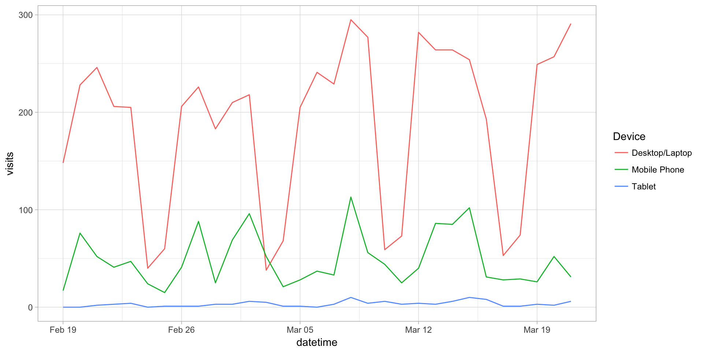

This example pulls visits by device type for the last 30 days and then plots the data on a line chart.
Be sure you’ve completed the steps on the Initial Setup page before running this code.
For the setup, we’re going to load a few libraries, load our specific Adobe Analytics credentials, and then authorize with Adobe.
# Load the necessary libraries
library(RSiteCatalyst)
library(tidyverse)
library(devtools)
# Load the username, shared secret, and report suite ID
username <- Sys.getenv("ADOBE_API_USERNAME")
secret <- Sys.getenv("ADOBE_API_SECRET")
# Authorize Adobe Aalytics.
SCAuth(username, secret)## [1] "Credentials Saved in RSiteCatalyst Namespace."# Set the RSID and the date range. If you want to, you can swap out the Sys.getenv()
# call and just replace that with a hardcoded value for the RSID. And, the start
# and end date are currently set to choose the last 30 days, but those can be
# hardcoded as well.
rsid <- Sys.getenv("ADOBE_RSID")
start_date <- Sys.Date() - 31 # 30 days back from yesterday
end_date <- Sys.Date() - 1 # YesterdayIf that all runs with just some messages but no errors, then you’re set for the next chunk of code: pulling the data.
This is a simple query.
# Pull the data. See ?QueueTrended() for additional parameters.
aa_data <- QueueTrended(rsid,
date.from = start_date,
date.to = end_date,
metrics = "visits",
elements = "mobiledevicetype",
date.granularity = "day")
# Go ahead and do a quick inspection of the data that was returned. This isn't required,
# but it's a good check along the way.
head(aa_data)| datetime | name | url | visits | segment.id | segment.name |
|---|---|---|---|---|---|
| 2017-09-02 | Other | 283 | |||
| 2017-09-02 | Mobile Phone | 58 | |||
| 2017-09-02 | Tablet | 12 | |||
| 2017-09-02 | EReader | 0 | |||
| 2017-09-03 | Other | 372 | |||
| 2017-09-03 | Mobile Phone | 56 |
There’s not a ton of data munging to be done here. We’ll change the date to be Date instead of POSIXlt to play nice with the plotting, and we’ll grab just the columns we need to do the data visualization. And, for giggles, we’ll change “Other” to be “Desktop/Notebook.”
# Convert the datetime from POSIXlt to Date
aa_data$datetime <- as.Date(aa_data$datetime)
# Clean up the table a bit
aa_data <- aa_data %>%
mutate(device = ifelse(name=="Other", "Desktop/Tablet", name)) %>%
select(datetime, device, visits)
# Check what it looks like now
head(aa_data)| datetime | device | visits |
|---|---|---|
| 2017-09-02 | Desktop/Tablet | 283 |
| 2017-09-02 | Mobile Phone | 58 |
| 2017-09-02 | Tablet | 12 |
| 2017-09-02 | EReader | 0 |
| 2017-09-03 | Desktop/Tablet | 372 |
| 2017-09-03 | Mobile Phone | 56 |
This won’t be the prettiest plot, but this example isn’t diving into the details of ggplot2. If you want to read up on that, this page on dartistics.com is worth checking out.
# Create the plot.
gg <- ggplot(aa_data, mapping = aes(x = datetime, y = visits, colour = device)) +
geom_line() +
theme_light()
# Output the plot. You *could* just remove the "gg <-" in the code above, but it's
# generally a best practice to create a plot object and then output it, rather than
# outputting it on the fly.
gg
This site is a sub-site to dartistics.com